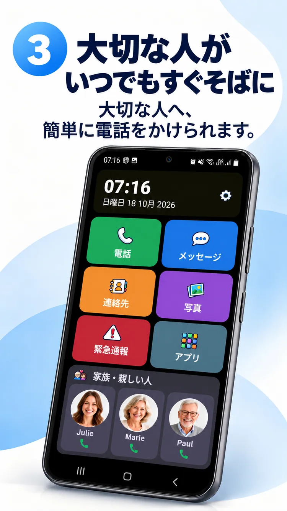
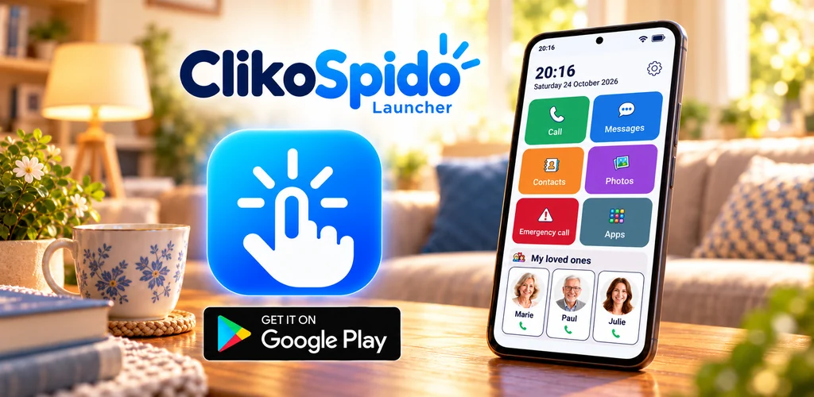
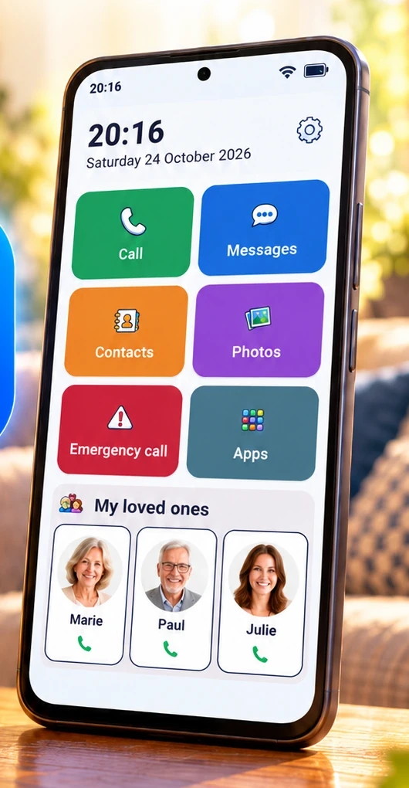
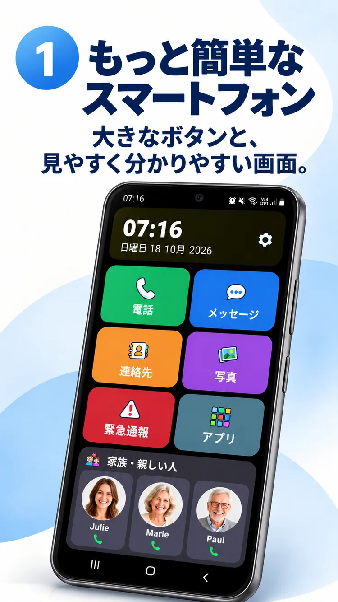

01
写真からすぐ電話。
大切な人を身近に。


Androidのホーム画面を使いやすく。大切な人への連絡も、毎日の操作も、より簡単に。
ClikoSpidoは対応するAndroid端末のホーム画面を見やすく、親しみやすく、カスタマイズ可能にします。迷いを減らし、自分らしい操作を支えます。
大きな操作ボタンと便利な機能を、わかりやすい画面に。

電話、メッセージ、連絡先、写真、カメラ、緊急連絡ショートカットにすぐアクセスできます。
宣伝用イメージです。実際のアプリ画面とは異なる場合があります。
大切な人を身近に。

大きなダイヤルと見やすい操作。
写真と五十音・アルファベット検索。
家族が表示を調整し、使用できるアプリを選び、一部の設定をPINで保護できます。
日本語の公式プロモーション画像8枚をご覧ください。

利用前の疑問にお答えします。
はい。対応するAndroidスマートフォンで標準ホームアプリとして設定できます。
いいえ。今お使いの対応Android端末を使いやすくできます。
いいえ。メッセージボタンから既存のメッセージアプリを開きます。
いいえ。設定した相手に連絡するショートカットであり、公的な緊急サービスの代わりにはなりません。